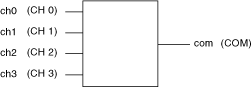

The following figure represents the NI PXI-2545 in the terminated 4×1 multiplexer topology.
|  |
|
 |
Caution The terminators on the NI PXI-2545 are rated for 1.5 W at 25 °C. When operating at ambient temperatures greater than 25 °C, a termination power derating applies. Refer the NI PXI-2545 Specifications for more information about termination power derating. Terminators cannot withstand the full rated power of the NI PXI-2545. |
Call the niSwitch Connect Channels VI or the niSwitch_Connect function to connect channels in this topology. If applicable, call the niSwitch Disconnect Channels VI or the niSwitch_Disconnect function to disconnect an existing connection before you call the niSwitch Connect Channels VI or the niSwitch_Connect function.
 |
Note All channels are disconnected from COM when the NI PXI-2545 is in its power on state. Any input channel not connected to COM is connected to its associated 50 Ω terminator. |
The following sequence of tasks illustrates the VI/function calls necessary to make consecutive connections—one between CH 1 and COM and the other between CH 2 and COM:
When scanning the NI PXI-2545, a typical scan list entry might be ch1->com;. This entry routes the signal connected to CH 1 to COM.